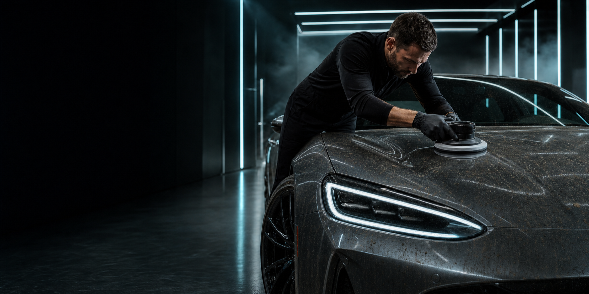

Essential Wash
Kímélő előmosás, kétvödrös kézi mosás, felnik és abroncsok ápolása.
7 990 Ft-tólKiválasztom
Premium automotive care / Budapest
Precíz detailing, tükörfényű felületek és tartós védelem. Egy filmszerű átalakulás, amit minden alkalommal újra átél.
01 / Filozófia
02 / Scroll transformation


03 / Próbáld ki
Fogd meg a csúszkát, és hasonlítsd össze ugyanazt az autót a detailing előtt és után.
04 / Csomagok
Kímélő előmosás, kétvödrös kézi mosás, felnik és abroncsok ápolása.
7 990 Ft-tólKiválasztomTeljes belső mélytisztítás, kárpittisztítás, bőrápolás és ózonos frissítés.
24 990 Ft-tólKiválasztomTöbblépcsős polírozás, fényezéskorrekció és prémium kerámia védelem.
59 990 Ft-tólKiválasztom
05 / A folyamat
A felülethez választott anyagok és eszközök.
A részlet, amit más nem vesz észre.
Védelem, ami hónapokig megmarad.
Nincs rejtett költség vagy meglepetés.
06 / Következő lépés
Foglaljon időpontot, és adja vissza autójának a megérdemelt ragyogást.